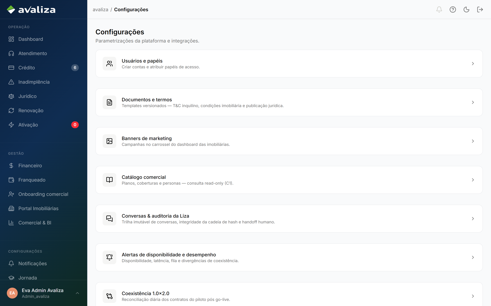

Você decide contratos que o motor não aprovou sozinho. A fila e o dossiê são o ciclo; análise avulsa, Serasa e limites do motor são ferramentas — não substituem a reanálise.
Seu papel
Seu trabalho começa quando a Liza encaminha um contrato para revisão humana e termina quando você registra a decisão no dossiê — aprovar, negar ou exigir solidário.
Você analisa exceções: score fora da faixa, valor acima do teto da persona ou SLA de processamento excedido.
A decisão é no dossiê, não na listagem. É irreversível e auditável.
Você não origina proposta — isso é da imobiliária.
Você não conduz a ativação do locatário — isso é do portal.
Você não gerencia campanhas do carrossel — isso é Marketing ou Admin.
Onde começo meu dia?
Reanálise de contratos
Menu Crédito → Reanálise. A urgência vem da Liza, não da ordem da lista. Comece pelo card que ela destacar.
Fila de reanálise
Sua home operacional. Rotas: /credito (fila) e /credito/reanalise (redireciona para a mesma fila).
Tela de trabalhoPróximo passo: abrir o primeiro contratoOrdenada pela Liza
Quando não há contratos pendentes, a tela mostra o empty state: “Nenhuma reanálise pendente”. Isso é normal — significa que o motor não escalou nada para a diretoria no momento.
avaliza.app/credito
Fila de reanálise — cards por urgência da Liza
O que cada card mostra
No card
O que é
Contrato · locatário
Qual dossiê abrir. CPF na frente do nome quando disponível.
Motivo do roteamento
Por que o motor escalou: score fora da faixa, valor acima do limite da persona, tempo de processamento excedido etc.
Badge SLA excedido
Contratos com motivo TEMPO_PROCESSAMENTO_EXCEDIDO (RN01). Use o filtro homônimo na barra.
Plano · valor · imobiliária
Contexto rápido antes de abrir o dossiê completo.
Status
Em reanálise, aguardando decisão etc.
Clique no card para abrir o dossiê. A listagem Aprovação Diretoria (/credito/banca-humanizada) é um recorte visual — a decisão continua no dossiê.
Decidir no dossiê
Esta é a atividade central. Você abre o contrato pela fila, revisa sinais do motor e registra a decisão no painel da diretoria.
Abra o contrato pela fila
Clique no card em Reanálise. Ou use a URL direta de demo: /credito/analisar?auditId=7&contrato=101 (caso SLA mock).
Revise o dossiê
Score, renda, histórico Serasa, composição do plano e motivo do roteamento. A aba de sinais resume o que o motor viu.
Registre a decisão
No painel Decisão da Diretoria: aprovar, negar ou condicionar (ex.: exigir solidário). Justificativa quando exigida.
Confirme
A decisão sai da fila e segue para o próximo responsável — ativação/assinatura se aprovado, ou retorno à imobiliária se negado.
Quem executa é o locatário no portal. /ativacao no shell é só ver quem travou.
/ativacao
avaliza.app/ativacao
Acompanhamento de ativação
Carrossel de banners
Campanhas de marketing no dashboard das imobiliárias. Quem configura é Marketing ou Admin; corretor e gestor só veem.
Marketing / AdminImobiliária: visualização
O que a imobiliária vê
No /dashboard, abaixo do hero, o carrossel roda os banners ativos na vigência. Cada slide respeita o tempo de exibição configurado (segundos por banner).
Papéis: corretor, admin_imobiliaria
avaliza.app/dashboard
Dashboard — carrossel de campanhas
Administrar banners
Menu Configurações → Banners de marketing (/configuracoes/banners).
Data início e fim. Banner fora da vigência não aparece.
Ordem
Define a sequência no carrossel.
Preview
Visualização antes de publicar.
Papéis: marketing, admin_avaliza
avaliza.app/configuracoes/banners

Configurações — entrada para banners de marketing
Roteiro rápido — Carrossel
Rota
Papel
Validar
/dashboard
corretor / admin_imobiliaria
Carrossel visível; slides alternam pelo tempo configurado
/configuracoes/banners
marketing / admin_avaliza
CRUD, upload, preview, tempo de exibição
/configuracoes
marketing / admin_avaliza
Card “Banners de marketing” no hub
Em staging/produção sem backend Django, a API pode retornar 501 — a UI exibe mensagem amigável (PROVIDER_UNAVAILABLE). Em dev, mocks alimentam o carrossel.
Quando outro time assume
Você decide o crédito. O restante da operação continua com o dono de cada etapa.
Imobiliária
Origina a proposta. Recebe o resultado da reanálise — aprovado, negado ou solidário pendente.
Não decide exceção de crédito.
Portais do locatário
Entram depois da aprovação: ativação (/ativacao/{token}) e assinatura ZapSign.
O locatário não tem login no shell.
Marketing
Gerencia banners do carrossel. Não entra na fila de reanálise.
Atendimento
Pode receber chamado quando a imobiliária questiona reprovação. A decisão continua no dossiê.
De quem recebo e para quem passo
A imobiliária origina; o motor escala; você decide; o destino depende da decisão.
ImobiliáriaNova proposta
Motor de créditoAutomático ou escala
quando escala ↓
Crédito / DiretoriaVocê decide no dossiê
conforme a decisão ↓
Portal do locatárioAtivação e assinatura
ImobiliáriaNegado ou solidário
Quando algo sair do fluxo esperado
Situações que o produto já trata ou que dependem do backend.
Fila vazia
Empty state “Nenhuma reanálise pendente”.
O que fazer. Normal quando o motor não escalou contratos. Use mocks em dev ou aguarde nova proposta com exceção.
SLA excedido sem badge
O filtro RN01 existe, mas o card não mostra SLA.
O que fazer. Backend ainda não emite TEMPO_PROCESSAMENTO_EXCEDIDO. Em dev, teste com contrato #101.
Carrossel não carrega em staging
API retorna 501 ou lista vazia.
O que fazer. Backend MarketingBanner ainda não deployado. Em dev, mocks funcionam. UI mostra aviso PROVIDER_UNAVAILABLE.
Imobiliária pergunta por que reprovou
Chamado no Atendimento ligado ao contrato.
O que fazer. Consulte o histórico e o dossiê. A decisão não muda no ticket.
Solidário após condicionar
Nova composição na imobiliária com segundo CPF.
O que fazer. O contrato pode voltar à fila de reanálise com novo auditId. Trate como caso novo na fila.